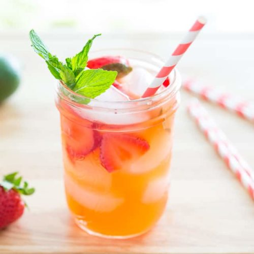

Strawberry Limeade

Description
This strawberry limeade is perfectly sweet and tart, and very refreshing drink for summer.
Ingredients
- 1/2 cup lime juice
- 1/3 cup sugar
- 1/3 cup water
- 1/2 lb sliced strawberries
- 20-30 mint leaves
- 2 cups cold water
Steps
- To make the simple syrup, combine the sugar and water in a saucepan, and cook over medium high heat for 5-10 minutes until the sugar is dissolved and the liquid is clear.
- In a large mason jar or a pitcher, combine the lime juice, simple syrup, strawberries, mint, and water. Let sit in the refrigerator for 2-3 hours. Serve and enjoy!